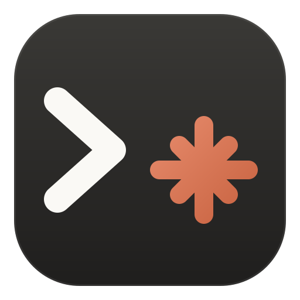

<!DOCTYPE html>
<html lang="zh-CN" data-theme="light" data-palette="classic">
<head>
  <meta charset="UTF-8">
  <meta http-equiv="Content-Security-Policy" content="default-src 'self'; style-src 'self' 'unsafe-inline'; script-src 'self'; img-src 'self' data: ccsfile: https:; frame-src ccsfile:">
  <title>CLI-desk</title>
  <link rel="stylesheet" href="../../node_modules/@xterm/xterm/css/xterm.css">
  <link rel="stylesheet" href="style.css">
</head>
<body>
  <div id="app">
    <aside id="sidebar">
      <div class="side-top drag">
        <div class="wordmark"><span>CLI-desk</span></div>
        <button id="btn-collapse" class="icon-btn" title="收起侧边栏" data-icon="panel" data-size="18"></button>
      </div>
      <div class="side-actions">
        <button id="btn-new" class="new-chat"><span class="plus-circle" data-icon="plus" data-size="14" data-stroke="2.4"></span><span>新建会话</span></button>
        <label class="search"><span data-icon="search" data-size="16"></span><input id="search" type="search" placeholder="搜索项目或会话" spellcheck="false"></label>
        <button id="btn-archive" class="nav-item"><span data-icon="archive" data-size="16"></span><span class="nav-text">已归档</span><span class="nav-count" id="archive-count"></span><span class="nav-chev" data-icon="chevron" data-size="14"></span></button>
      </div>
      <div class="section-head" id="section-head"></div>
      <div id="tree"></div>
      <div id="usage"></div>
      <div id="side-foot"></div>
    </aside>
    <div id="resizer"></div>
    <main id="main">
      <header id="topbar" class="drag">
        <button id="btn-expand" class="icon-btn hidden" title="展开侧边栏" data-icon="panel" data-size="18"></button>
        <div id="tabbar"></div>
        <div class="spacer"></div>
        <div id="top-actions"></div>
        <button id="btn-ego" class="icon-btn hidden" title="打开 / 收起速览窗（网页、文件）" data-icon="panelRight" data-size="18"></button>
        <div class="wc-space"></div>
      </header>
      <div id="workspace">
        <div id="stage">
          <div id="home"></div>
          <div id="terms" class="hidden"></div>
        </div>
        <div id="panel-resizer" class="hidden" title="拖动调整宽度，双击恢复默认"></div>
        <aside id="side-panel" class="hidden" tabindex="-1"></aside>
      </div>
    </main>
  </div>

  <div id="ctx-menu" class="hidden"></div>
  <div id="toast" class="hidden"></div>
  <div id="img-hover" class="hidden"></div>
  <div id="modal-mask" class="hidden"><div id="modal"></div></div>

  <script src="../../node_modules/@xterm/xterm/lib/xterm.js"></script>
  <script src="../../node_modules/@xterm/addon-fit/lib/addon-fit.js"></script>
  <script src="../../node_modules/@xterm/addon-unicode11/lib/addon-unicode11.js"></script>
  <script src="../../node_modules/@xterm/addon-webgl/lib/addon-webgl.js"></script>
  <script src="icons.js"></script>
  <script src="app.js"></script>
  <script src="../../node_modules/marked/lib/marked.umd.js"></script>
  <script src="../../node_modules/dompurify/dist/purify.min.js"></script>
  <script src="../../node_modules/@highlightjs/cdn-assets/highlight.min.js"></script>
  <script src="../../node_modules/@highlightjs/cdn-assets/languages/powershell.min.js"></script>
  <script src="../../node_modules/@highlightjs/cdn-assets/languages/dos.min.js"></script>
  <script src="../../node_modules/@highlightjs/cdn-assets/languages/cmake.min.js"></script>
  <script src="../../node_modules/@highlightjs/cdn-assets/languages/protobuf.min.js"></script>
  <script src="../../node_modules/@highlightjs/cdn-assets/languages/latex.min.js"></script>
  <script src="../../node_modules/@highlightjs/cdn-assets/languages/verilog.min.js"></script>
  <script src="../../node_modules/@highlightjs/cdn-assets/languages/vhdl.min.js"></script>
  <script src="../../node_modules/@highlightjs/cdn-assets/languages/x86asm.min.js"></script>
  <script src="../../node_modules/@highlightjs/cdn-assets/languages/dart.min.js"></script>
  <script src="../../node_modules/@highlightjs/cdn-assets/languages/groovy.min.js"></script>
  <script src="../../node_modules/@highlightjs/cdn-assets/languages/gradle.min.js"></script>
  <script src="../../node_modules/@highlightjs/cdn-assets/languages/elixir.min.js"></script>
  <script src="../../node_modules/@highlightjs/cdn-assets/languages/erlang.min.js"></script>
  <script src="../../node_modules/@highlightjs/cdn-assets/languages/haskell.min.js"></script>
  <script src="../../node_modules/@highlightjs/cdn-assets/languages/ocaml.min.js"></script>
  <script src="../../node_modules/@highlightjs/cdn-assets/languages/clojure.min.js"></script>
  <script src="../../node_modules/@highlightjs/cdn-assets/languages/julia.min.js"></script>
  <script src="../../node_modules/@highlightjs/cdn-assets/languages/nix.min.js"></script>
  <script src="../../node_modules/@highlightjs/cdn-assets/languages/fsharp.min.js"></script>
  <script src="../../node_modules/@highlightjs/cdn-assets/languages/scala.min.js"></script>
  <script src="panel.js"></script>
  <script src="files.js"></script>
  <script src="images.js"></script>
  <script src="docs.js"></script>
  <script src="quicklook.js"></script>
</body>
</html>
